Learning Objectives
After completing this lesson, you'll be able to:
- Route features that fail schema checks to different locations.
- Build a schema change report using HTML transformers.
In this lesson, you will:
- Optional: Watch a demonstration video (it repeats what we cover in live training).
- Scroll down to read the activity instructions below and, if it has an exercise, follow the steps in your lab.
- Complete the quiz at the end of this lesson.
- Click 'Next' to mark the lesson complete.
Resources
- Starting workspace
- If your computer has FMEData, the file path is C:\FMEData\Workspaces\AdvancedReadingAndWriting\react-to-schema-drift-with-the-schemascanner.fmw
- Complete workspace
- If your computer has FMEData, the file path is C:\FMEData\Workspaces\AdvancedReadingAndWriting\react-to-schema-drift-with-the-schemascanner-complete.fmw
- BikePaths_L.zip
- C:\FMEData\Resources\DynamicWorkflows\Data\BikePaths_L.zip
- Updated_BikePaths_L.zip
- C:\FMEData\Resources\DynamicWorkflows\Data\Updated_BikePaths_L.zip
Exercise

Jennifer's workspace can now detect when an upload's schema has drifted, but it only reports this in the FME log. She wants whoever uploaded the file to receive a readable report, whether the check passed or failed, so they can correct their own data before it reaches the base dataset.
In this exercise, you will:
- Turn schema differences into readable messages with an AttributeCreator.
- Build pass and fail HTML reports with the HTMLReportGenerator and HTMLLayouter.
1) Message the Unexpected Attributes
The ChangeDetector's Inserted port carries attributes that appear in the upload but not in the original. Each one needs a sentence a person can act on.
- Open the starting workspace in FME Workbench 2026.2 or later, or continue from the previous lesson.
- Add an AttributeCreator and connect it to the ChangeDetector Inserted port.
- Create a New Attribute named
_message and set its Attribute Value to Unexpected Attribute: `@Value(name)' encountered in the input dataset.
- Click OK.
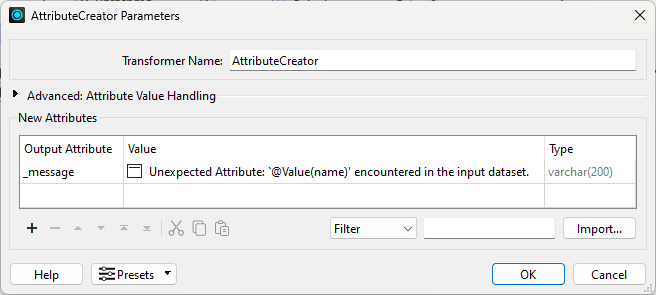
2) Message the Missing Attributes
The Deleted port is the mirror image: attributes the original had and the upload does not. The message wording is what tells the uploader which direction the problem runs in.
- Add a second AttributeCreator and connect it to the ChangeDetector Deleted port.
- On AttributeCreator_2, create a New Attribute named
_message and set its Attribute Value to Missing Attribute: `@Value(name)' is not in the input dataset.
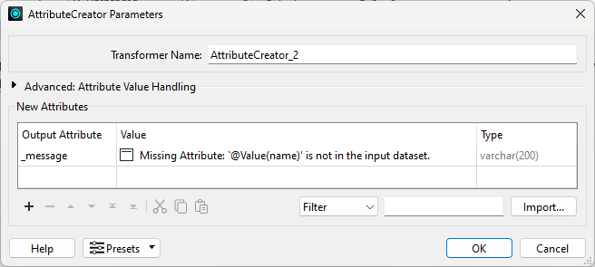
3) Detect a Clean Schema
No messages means no drift, and that case needs its own branch. The NoFeaturesTester fires only when nothing reaches it, which is exactly the signal for a passing check.
- Add a NoFeaturesTester.
- Connect both AttributeCreators to it.
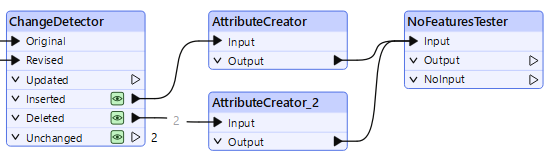
4) Build the Failure Report
This is the report an uploader sees when the check fails, so it needs to say what went wrong and list the offending attributes rather than just reporting a failure.
- Add an HTMLReportGenerator and connect both AttributeCreators to it.
- Set Page Title to
Schema Change Report.
- Under Page Contents, click the existing Chart (Bar) page and change it to Header.
- Click anywhere on the right of the dialog to confirm the change. The right pane then shows the Header parameters.
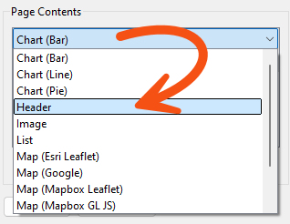
- Configure the following parameters under Content Settings:
- Text:
Schema Check Failed
- Header Level: H4
- Text Alignment: Left
- Color: 0,0,0
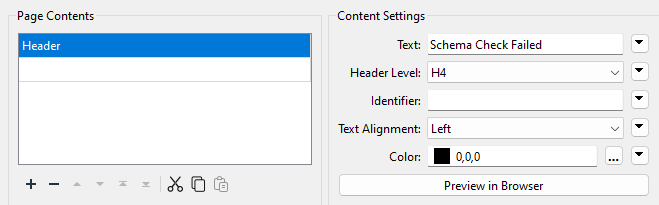
- Click the plus button at the bottom left to add a section, and set it to Custom HTML.
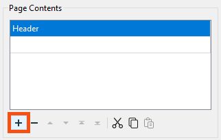
- Set the Custom HTML to
The upload was halted because the source schema has been changed! Please check the daily input and log for more details. <br> Below are the details on missing or unexpected attributes.<br> <br>
- Add another section, set it to Table, and set Table Style to Striped.
- Under Column Settings, set Column Contents to the _message attribute and Column Name to
Missing or Unexpected Attributes.
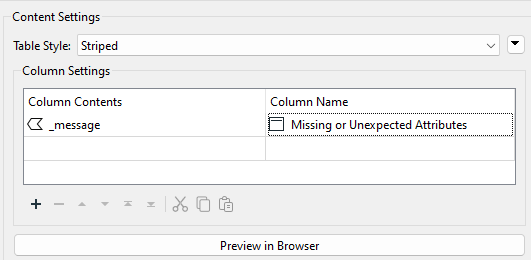
- Add a Separator section with a thickness of
2.
- Add a final Custom HTML section set to
<br>Thanks for your cooperation.
- Click OK.
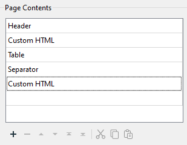
5) Lay Out the Failure Report
The report generator produces the content; the layouter arranges it. Pairing the two is the usual way to get a tidy Bootstrap or vertical layout without hand-writing HTML.
- Add an HTMLLayouter and connect it to the HTMLReportGenerator.
- The defaults give a vertical layout, which suits this report.
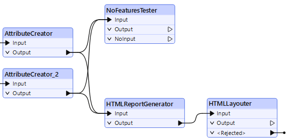
6) Build the Success Report
A passing check deserves an answer too. Without it the uploader cannot tell success from a workspace that simply did not run.
- Add a second HTMLReportGenerator and connect it to the NoFeaturesTester NOINPUT port.
- Set Page Title to
Schema Change Report.
- Change the Chart (Bar) page to Header and configure the following parameters:
- Text:
Schema Check Passed
- Header Level: H4
- Text Alignment: Left
- Color: 0,0,0
- Add a Custom HTML section set to
Hello, <br> Your data has passed the schema validation test and is ready to be uploaded. <br> Thanks for your cooperation.
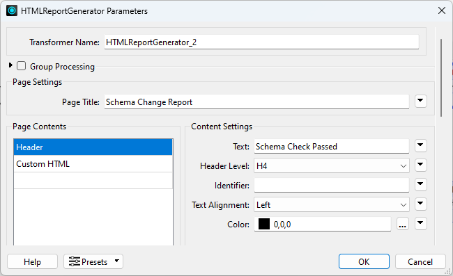
- Click OK.
- Add a second HTMLLayouter and connect HTMLReportGenerator_2 to it.
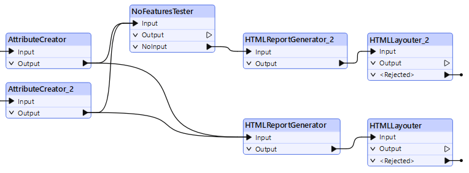
7) Add the HTML Writers
Two outcomes need two output files. Writing them to the same folder keeps the pair together for whoever collects the report.
- Select Build > Writers > Add Writer and configure the following parameters:
- Format: HTML
- Dataset: C:\FMEData\Output\Training\schema_failed.html
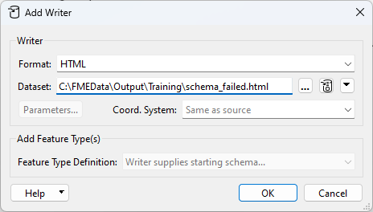
- Click OK and connect the first HTMLLayouter to the writer feature type.
- Add a second HTML writer to the same folder, naming the file
schema_passed.html.
- Connect HTMLLayouter_2 to the schema_passed writer feature type.
8) Run the Workspace
The upload in this exercise has drifted, so the failure branch is the one that fires. Opening the file is how you see what the uploader would receive.
- Click Run.
- Click the schema_failed.html writer feature type, then Open Containing Folder.
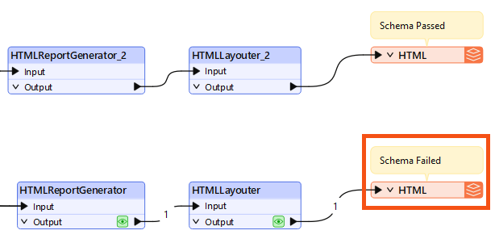
- Open the HTML file in a browser.
- You should see a Schema Check Failed report listing the missing and unexpected attributes.
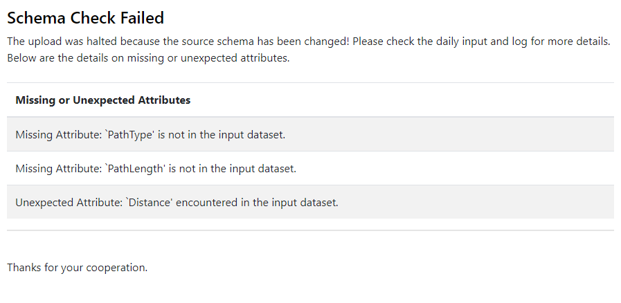
You have turned a schema comparison into something a person can act on: a report that names exactly which attributes are missing or unexpected, and a matching report for when nothing has drifted. The same output could be emailed from an Automation, or returned in the browser from an FME Flow App so an uploader sees it the moment they submit a file.
Tips
- The report does not have to be a file. The HTML content produced by the HTMLReportGenerator and HTMLLayouter can be emailed to the uploader from an Automation, or returned straight to the browser from an FME Flow App so they see it the moment they submit.
- The same schema check works as a gate rather than a report. Drop it into another workspace to verify a schema before integrating data, or make it a standalone workspace that has to run successfully at the start of an FME Flow Automation.
- The NoFeaturesTester ships with FME as of 2026.2. On earlier versions it came from the FME Hub as a custom transformer and had to be installed, which is worth knowing if you run this on an older version of FME.
Additional Resources